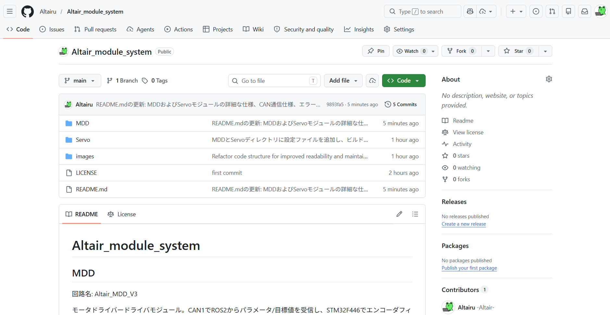
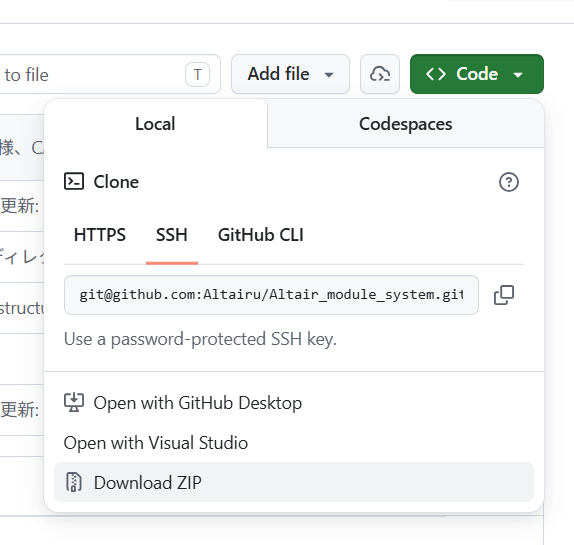
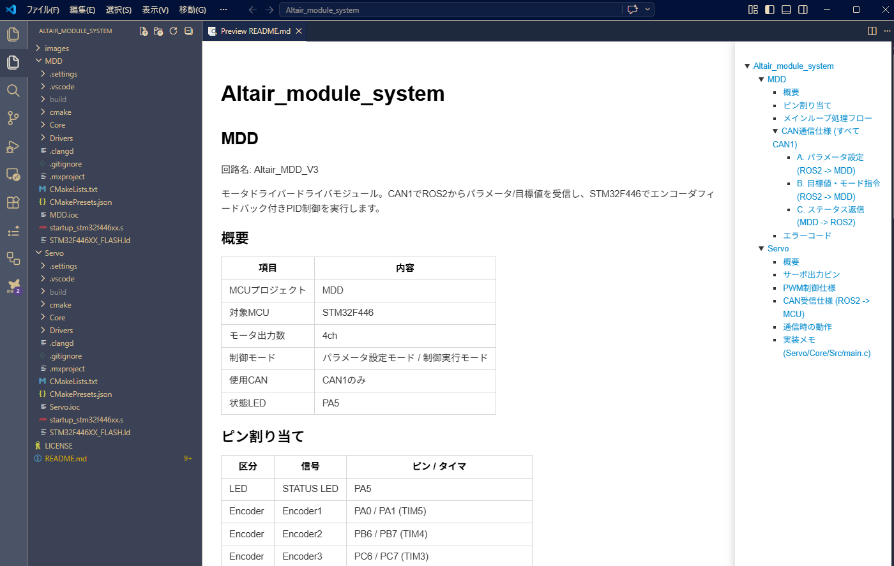
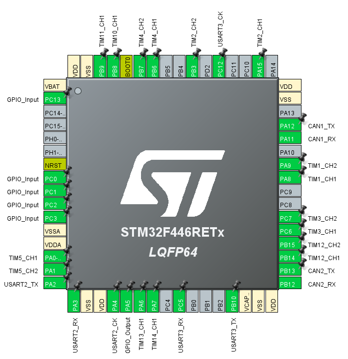
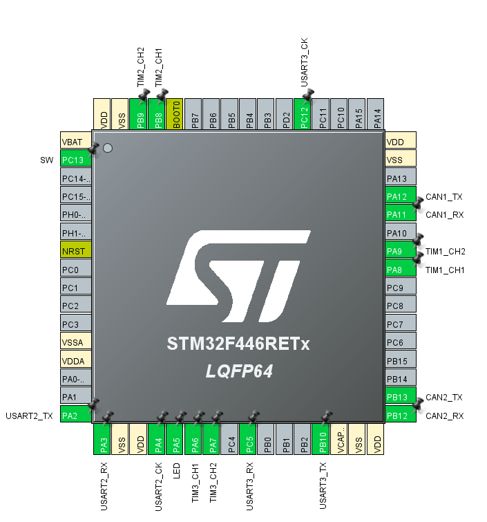

Altair_module_system
使い方
https://github.com/Altairu/Altair_module_system 上記URLより構築済みモジュールコードをダウンロードします．


ダウンロードが完了すると中身が以下画像のようなフォルダー構造になります．(2026/4/16現在)

回路に書き込む際は各フォルダー（MDDやServo）単体でVScodeで開くほうがビルド設定などが楽です．簡単なため初心者にはお勧めです．
MDD
回路名: Altair_MDD_V3
モータドライバードライバモジュール。CAN1でROS2からパラメータ/目標値を受信し、STM32F446でエンコーダフィードバック付きPID制御を実行します。
概要
| 項目 | 内容 |
|---|---|
| MCUプロジェクト | MDD |
| 対象MCU | STM32F446 |
| モータ出力数 | 4ch |
| 制御モード | パラメータ設定モード / 制御実行モード |
| 使用CAN | CAN1のみ |
| 状態LED | PA5 |
ピン割り当て

| 区分 | 信号 | ピン / タイマ |
|---|---|---|
| LED | STATUS LED | PA5 |
| Encoder | Encoder1 | PA0 / PA1 (TIM5) |
| Encoder | Encoder2 | PB6 / PB7 (TIM4) |
| Encoder | Encoder3 | PC6 / PC7 (TIM3) |
| Encoder | Encoder4 | PB3 / PA15 (TIM2) |
| Motor | Motor1 | PB14 (TIM12 CH1), PB15 (TIM12 CH2) |
| Motor | Motor2 | PA8 (TIM1 CH1), PA9 (TIM1 CH2) |
| Motor | Motor3 | PA6 (TIM13 CH1), PA7 (TIM14 CH1) |
| Motor | Motor4 | PB8 (TIM10 CH1), PB9 (TIM11 CH1) |
| Limit SW | SW1 | PC0 |
| Limit SW | SW2 | PC1 |
| Limit SW | SW3 | PC2 |
| Limit SW | SW4 | PC3 |
| Serial | USART2 | TX=PA2, RX=PA3 |
| Serial | USART3 | TX=PB10, RX=PC5 |
| CAN | CAN1 | TX=PA12, RX=PA11 |
| CAN | CAN2 | TX=PB13, RX=PB12 (本仕様では未使用) |
メインループ処理フロー
- 初期化 HAL/CubeMX初期化後、Altair_library_for_CubeIDEを用いてMotorDriver/Encoder/CAN1を初期化し、パラメータ設定モードで起動します。
- パラメータ設定モード CAN ID 0x200, 0x201, 0x203, 0x204 の各パラメータを待機し、4モータ分がそろえば制御実行モードへ遷移します。
- タイムアウト時の遷移 起動後2秒以内に全パラメータがそろわない場合は、デフォルトゲインで制御実行モードへ移行し、INIT_TIMEOUTをセットします。
- 制御実行モード 1ms周期でエンコーダ差分から速度/角度を更新し、モード(速度/角度)に応じてPID演算してPWMへ反映します。
- ステータス返信 10ms周期でリミット状態とモータ系ステータスをCAN1へ送信します。
- LED制御 エラーなしでON、エラーありでOFFにします。
CAN通信仕様 (すべて CAN1)
A. パラメータ設定 (ROS2 -> MDD)
CAN ID:
-
Motor1: 0x200
-
Motor2: 0x201
-
Motor3: 0x203
-
Motor4: 0x204
Payload: 8B (little-endian int16)
-
Byte0-1: Pゲイン x100
-
Byte2-3: Iゲイン x100
-
Byte4-5: Dゲイン x100
-
Byte6-7: 車輪径/出力方向
Byte6-7の解釈:
-
絶対値: 車輪径[mm]
-
符号: PID出力方向 (正=通常, 負=反転)
例:
-
0x0064 (100) -> 車輪径 100mm, 通常方向
-
0xFF9C (-100) -> 車輪径 100mm, 反転方向
B. 目標値・モード指令 (ROS2 -> MDD)
CAN ID: 0x210 (目標値)
Payload: 8B (little-endian int16)
-
Byte0-1: M1目標 x10
-
Byte2-3: M2目標 x10
-
Byte4-5: M3目標 x10
-
Byte6-7: M4目標 x10
スケール:
-
速度モード時: 目標速度[rps] x10
-
角度モード時: 目標角度[deg] x10
CAN ID: 0x211 (モード指令)
Payload: 8B (little-endian int16)
-
Byte0-1: M1モード
-
Byte2-3: M2モード
-
Byte4-5: M3モード
-
Byte6-7: M4モード
モード値:
-
0: 速度制御
-
1: 角度制御
備考:
- モードは受信後に保持され、次に0x211を受信するまで継続します。
C. ステータス返信 (MDD -> ROS2)
CAN ID: 0x120 (リミットスイッチ)
Payload: 4B
-
Byte0: Limit SW1
-
Byte1: Limit SW2
-
Byte2: Limit SW3
-
Byte3: Limit SW4
CAN ID: 0x121 (Motor系ステータス)
Payload: 6B
-
Byte0: Motor1モード
-
Byte1: Motor2モード
-
Byte2: Motor3モード
-
Byte3: Motor4モード
-
Byte4: エラーコード
-
Byte5: システム状態 (0=パラメータ設定, 1=制御実行)
エラーコード
| 値 | 名称 | 内容 |
|---|---|---|
| 0x00 | NORMAL | 正常 |
| 0x01 | INIT_TIMEOUT | 起動時に必要パラメータ未受信のままタイムアウト |
| 0x02 | CAN_RX_TIMEOUT | 一定時間CAN受信なし |
| 0x04 | CAN_TX_FAIL | フィードバック送信失敗 |
注記:
- エラーコードはビットフラグで、同時に複数立つ場合があります。
Servo
回路名: ALTAIR_SERVO_MODULE_V6
サーボモーター用モジュール。ROS2 PC から USB to CAN を介して目標角度を送信し、STM32 が 6ch のサーボ PWM を生成する。
概要
| 項目 | 内容 |
|---|---|
| MCUプロジェクト | Servo |
| 対象MCU | STM32F446 |
| サーボ出力数 | 6ch |
| 使用CAN | CAN1 (受信) |
| 搭載CANポート | 2系統 |
| 状態LED | PA5 |
サーボ出力ピン
PIN設定

| サーボ | ピン | タイマ |
|---|---|---|
| Servo1 | PA6 | TIM3 CH1 |
| Servo2 | PA7 | TIM3 CH2 |
| Servo3 | PA8 | TIM1 CH1 |
| Servo4 | PA9 | TIM1 CH2 |
| Servo5 | PB8 | TIM2 CH1 |
| Servo6 | PB9 | TIM2 CH2 |
PWM制御仕様
| 項目 | 値 |
|---|---|
| 制御周期 | 20ms (50Hz) |
| パルス幅範囲 | 0.5ms から 2.4ms |
| 目標角度 | 0 から 180 [deg] |
| 角度-パルス幅変換 | pulse_us = 500 + (1900 * angle_deg / 180) |
CAN受信仕様 (ROS2 -> MCU)
| 項目 | 値 |
|---|---|
| 使用CAN | CAN1 |
| CAN ID | 100 (標準ID) |
| DLC | 6 |
Payload (6B)
-
Byte0: Servo1角度 [0..180]
-
Byte1: Servo2角度 [0..180]
-
Byte2: Servo3角度 [0..180]
-
Byte3: Servo4角度 [0..180]
-
Byte4: Servo5角度 [0..180]
-
Byte5: Servo6角度 [0..180]
注記:
- Byte値が180を超える場合はMCU側で180にクリップします。
通信時の動作
-
CAN受信時: LED(PA5) をON
-
通信が途切れた場合: 最後に受信した目標角度を保持して出力を継続
実装メモ (Servo/Core/Src/main.c)
-
CAN1フィルタをCAN ID 100に設定
-
CAN FIFO0受信割り込みで6バイトを取り込み
-
受信データを6系統PWM比較値へ反映
-
TIM1/TIM2/TIM3を1MHzカウンタ化 (Prescaler=83)、Period=19999で50Hz PWMを生成
Note
著者:Shion Noguchi